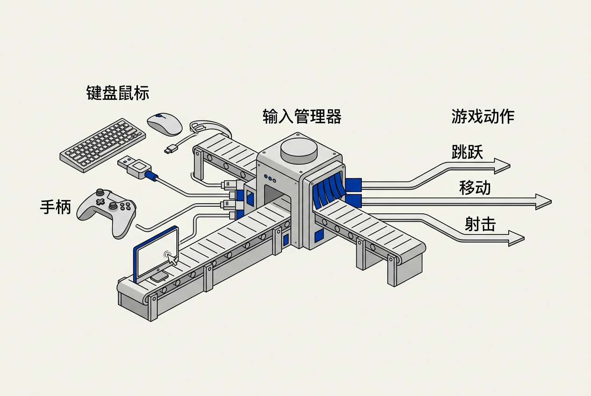

第9章：人机交互设备 — 零基础讲义
讲义说明
本讲义基于 Jason Gregory 所著《Game Engine Architecture Volume I》第4版第9章（Human Interface Devices, p.521-549），逐节翻译推导，深入讲解从硬件电气信号到游戏逻辑动作的完整输入处理管线。
本版插画由 ImageGen + Guizang 材质插画标准流程生成。
学习目标
- 理解游戏引擎如何从物理硬件获取原始输入信号
- 掌握输入处理管线的完整流程（硬件→驱动→引擎→游戏逻辑）
- 理解死区、灵敏度曲线、输入映射的概念与实现
- 掌握力反馈的基本原理
- 知道如何测量和降低输入延迟
- 理解多人游戏中的输入隔离与网络同步
9.1 输入设备类型总览

生活类比： 想象你在开一辆车。方向盘、油门、刹车是你的"输入设备"，它们把物理动作变成电信号，传给车载电脑（"输入管线"），最终转换为车轮转向、引擎转速等实际动作（"游戏逻辑"）。游戏引擎的输入系统跟这一模一样。
9.1.1 键盘
键盘是最古老的游戏输入设备之一。每个按键由两个电极片之间的橡胶碗构成——按下时接通电路，释放时断开。
9.1.1.1 键盘的电气原理
键盘内部是一个按键矩阵（Key Matrix），纵横交错的导线上有开关。键盘控制器以极高的频率扫描矩阵，检测哪些交叉点被接通。扫描频率通常为 125Hz~1000Hz（即每 1ms~8ms 扫描一次），这直接影响输入延迟。
9.1.1.2 键盘在游戏中的优缺点
| 优点 | 缺点 |
|---|---|
| 按键多（~104个），适合复杂快捷键（RTS/MOBA） | 只有 0/1 两种状态，无法感知"按多深" |
| 精准的文字输入（聊天/控制台） | 排列为网格，不符合人体工学的手指运动轨迹 |
| 低成本、标准化、即插即用 | N-key rollover 受限（廉价键盘只能同时识别 3-4 个键） |
9.1.1.3 键位冲突（Ghosting）与 N-Key Rollover
廉价键盘的键位矩阵设计可能导致假按键（Ghosting）——当你同时按下三个键时，键盘芯片误认为第四个不存在的键也被按下了。这是因为矩阵扫描无法区分某些三键组合。
机械键盘每个按键有独立的二极管来防止电流回流，因此可以实现N-Key Rollover（无限制同时按键）。这就是为什么职业玩家都用机械键盘。
// 游戏中判断按键的伪代码
if (Input.GetKey(KeyCode.W)) // 按键是否被按住？
player.MoveForward();
if (Input.GetKeyDown(KeyCode.Space)) // 按键是否在这一帧被按下？
player.Jump(); // 只触发一次跳跃
if (Input.GetKeyUp(KeyCode.E)) // 按键是否在这一帧被释放？
player.StopInteract();因为 GetKey 每帧都返回 true，按一下空格会触发几百次跳跃。GetKeyDown 只在"松→按"的那一帧返回 true，确保按一次只触发一次。
9.1.2 鼠标
鼠标用于提供相对位移（Delta Movement），不像键盘那样只有 0/1。游戏中主要用于视角旋转（FPS）或光标定位（RTS/MOBA）。
9.1.2.1 鼠标的工作原理
现代游戏鼠标使用光电传感器（光学鼠标）或激光传感器（激光鼠标）。传感器以极高频率（通常 1000Hz~8000Hz）拍摄底部表面，通过图像差分析得出 X/Y 方向的偏移量。
9.1.2.2 DPI 与灵敏度
DPI（Dots Per Inch）：鼠标每移动 1 英寸（2.54cm），传感器报告多少个"点"。DPI 越高，同样的物理移动产生的屏幕光标位移越大。
// 鼠标输入处理
float sensitivity = 0.02f; // 鼠标灵敏度
float deltaX = Input.GetAxis("Mouse X") * sensitivity;
float deltaY = Input.GetAxis("Mouse Y") * sensitivity;
// 应用到相机旋转
camera.RotateYaw(deltaX);
camera.RotatePitch(-deltaY); // Y 轴反向（向下拖 = 向上看）9.1.2.3 鼠标加速的坑
操作系统默认开启鼠标加速——移动越快，光标位移越大（非线性映射）。但游戏中必须关闭加速，因为玩家需要"一样的物理移动 → 一样的游戏内旋转"，否则肌肉记忆会失效。
解决方案： 使用 Raw Input API（Windows）直接从设备驱动读取未处理的原始数据，绕过操作系统的鼠标加速层。
// Windows Raw Input 示例（伪代码）
RegisterRawInputDevices(); // 注册原始输入设备
// 在消息循环中处理 WM_INPUT 消息
case WM_INPUT:
GetRawInputData(); // 读取原始鼠标位移，绕过加速9.1.3 手柄（Gamepad）
手柄是现代游戏的标配设备。与键盘不同的是，手柄的摇杆和扳机是模拟输入——它们报告的不是 0/1，而是一个连续范围的值（通常 -1.0 ~ 1.0 或 0.0 ~ 1.0）。
9.1.3.1 手柄的标准输入元件
| 元件 | 类型 | 输出范围 | 典型用途 |
|---|---|---|---|
| 左摇杆（Left Stick） | 二维模拟 | (-1,-1)~(1,1) | 角色移动 |
| 右摇杆（Right Stick） | 二维模拟 | (-1,-1)~(1,1) | 视角控制 |
| 左/右扳机（LT/RT） | 一维模拟 | 0.0~1.0 | 油门/刹车、瞄准 |
| 方向键（D-Pad） | 八方向数字 | 8个离散方向 | 菜单导航、快捷键 |
| 动作键（A/B/X/Y） | 数字 | 0或1 | 跳跃/攻击/互动 |
9.1.3.2 摇杆的物理结构
摇杆使用电位器（Potentiometer）或霍尔效应传感器来检测摇杆的偏转角度。电位器是物理接触式的（有磨损），霍尔传感器是非接触式的（通过磁场变化检测位置，更耐用）。
Xbox Elite、PS5 DualSense 等高端手柄都使用霍尔效应传感器，解决了"摇杆漂移"问题。
9.1.3.3 手柄的振动马达
大多数手柄内置两个偏心旋转质量（ERM）马达——电机带动一个偏心重块旋转，产生振动。大马达（低频，像地震）和小马达（高频，像枪击）各司其职。PS5 DualSense 更进一步，使用了音圈马达（Voice Coil Actuator），可以产生更细腻的触觉效果。
9.1.4 触摸屏
移动游戏的核心输入方式。电容式触摸屏通过检测手指导电引起屏幕表面电容变化来定位触摸点。
9.1.4.1 多点触控
现代触摸屏支持 5~10 点同时触控。游戏引擎将其抽象为多个"Touch"事件：
// 触控事件处理
Touch touch0 = Input.GetTouch(0); // 第一个手指
Touch touch1 = Input.GetTouch(1); // 第二个手指
// 常见手势：双指缩放
float prevDist = (touch0.prevPos - touch1.prevPos).Length();
float currDist = (touch0.currPos - touch1.currPos).Length();
float zoom = currDist / prevDist;9.1.4.2 移动端 vs 主机端的输入差异
| 特性 | 主机/PC | 移动端 |
|---|---|---|
| 输入精确度 | 高（物理按键/摇杆） | 中（手指遮挡+误触） |
| 触觉反馈 | 振动马达/力反馈 | 基本振动 |
| 同时操作数 | 10+ 按键同时 | 2~4 个手指 |
| 输入延迟 | 低（有线/USB） | 较高（电容扫描+GPU vsync） |
两个核心原因：① 玻璃表面没有物理参照，手指很容易滑出虚拟摇杆区域（没有"回中"的感觉）；② 触摸屏的延迟通常比手柄高 2-3 倍（电容扫描+操作系统处理+GPU渲染管线 vs 直接USB轮询）。
9.1.5 VR 控制器
VR 控制器（如 Meta Quest 手柄、Valve Index 手柄）是游戏输入设备中技术含量最高的。它们不仅提供按键/摇杆输入，还提供六自由度（6DOF）追踪——设备在空间中的 (x, y, z) 位置和 (roll, pitch, yaw) 旋转。
9.1.5.1 由内向外追踪（Inside-Out Tracking）
现代 VR 头盔通过头戴摄像头观察手柄上的红外 LED 阵列，用计算机视觉算法（通常是 SLAM——同时定位与建图）实时计算手柄的位姿。Meta Quest 系列是这一技术的代表。
9.1.5.2 手柄追踪数据流
// VR 手柄提供的不仅仅是按键，还有完整的 6DOF 位姿
Transform leftHand = VR.GetControllerPose(Hand.Left);
Vector3 handPos = leftHand.position;
Quaternion handRot = leftHand.rotation;
// 游戏中可以直接用它驱动角色的手部动画！
player.LeftHandIKTarget = handPos;9.1.6 其他输入设备
- 飞行摇杆（Joystick/HOTAS*）：模拟飞行游戏标配，大量轴输入（俯仰/滚转/偏航/油门）
- 方向盘（Steering Wheel）：赛车游戏，带力反馈（回正力矩/路面颠簸）
- 跳舞毯/健身环：压力传感器矩阵
- 体感摄像头（Kinect）：深度摄像头+骨架追踪，已停产但影响了后来的全身追踪技术
*HOTAS = Hands On Throttle And Stick
9.1.7 多设备共存问题
PC 游戏的一大挑战：玩家可能同时插着鼠标、键盘、Xbox 手柄、PS5 手柄、飞行摇杆——引擎需要区分并正确路由每个设备的输入。
9.1.7.1 设备 ID 管理
// 每个设备有唯一的 GlobalID
enum DeviceType { Keyboard, Mouse, Gamepad, Joystick, Touch, VRController };
struct InputDevice {
DeviceType type;
int playerIndex; // 属于哪个玩家（多人模式）
uint64_t globalID; // 系统分配的全局唯一ID
bool isConnected;
};
// 手柄热插拔处理
void OnDeviceConnected(InputDevice dev) {
int freeSlot = FindFreePlayerSlot();
if (freeSlot >= 0)
AssignDeviceToPlayer(dev, freeSlot);
}9.2 输入处理管线
理解整条管线是掌握游戏输入系统的关键。从硬件到游戏逻辑，数据经历六个阶段。
9.2.1 管线六阶段
9.2.1.1 阶段1：物理传感器 → 电气信号
手指按下按键 → 橡胶碗底部接通两个电极片 → 电路闭合 → 键盘芯片检测到该行该列导通。
9.2.1.2 阶段2：设备固件 → USB HID 报告
键盘/鼠标/手柄的板载芯片（MCU）将按键状态打包成 USB HID Report（符合 USB HID 协议的二进制数据包），通过 USB/蓝牙发送给主机。HID = Human Interface Device，是 USB 组织定义的标准协议，任何符合 HID 标准的设备都无需额外驱动就能被操作系统识别。
9.2.1.3 阶段3：操作系统 HID 驱动 → 事件队列
操作系统的 HID 驱动接收 USB 数据包，解析为标准事件（键盘扫描码→虚拟键码、鼠标位移量×2、手柄轴值×6……），放入进程的消息队列或共享内存缓冲区。
轮询频率： USB 默认轮询间隔为 8ms（125Hz），游戏鼠标/键盘可以降到 1ms（1000Hz）甚至 0.125ms（8000Hz）。频率越高，输入延迟越低，但 CPU 占用越大。
9.2.1.4 阶段4：引擎输入管理器 → 设备抽象
引擎的输入管理器从操作系统读取原始事件，将它们转换为引擎内部的设备无关表示。放在游戏循环的哪个位置非常关键——通常放在循环最开始（Frame Start），确保本帧所有逻辑使用的是同一批输入数据。
// 游戏循环中的位置
void GameLoop() {
InputManager.PollAllDevices(); // ← 第一步：采集所有输入
float dt = timer.GetDeltaTime();
UpdateLogic(dt); // 第二步：用采集到的输入更新逻辑
RenderFrame(); // 第三步：渲染
}玩家按下的跳跃键要等下一帧才能生效，多了一帧延迟。而且如果 UpdateLogic 中间调用了 Poll，同一帧可能出现"前半帧用旧输入，后半帧用新输入"的不一致状态。
9.2.1.5 阶段5：输入映射 → 游戏动作
这是输入系统最核心的设计——将设备相关的原始输入（"左摇杆X轴"、"空格键"）映射为设备无关的游戏动作（"Move"、"Jump"）。这样游戏逻辑代码完全不需要知道玩家用的是键盘还是手柄。
9.2.1.6 阶段6：游戏逻辑消费
最终，游戏逻辑通过动作名称读取输入值。角色的移动组件读 "Move" 的值（Vector2），不管这个值来自 WASD 还是左摇杆。
9.2.2 轮询 vs 事件驱动
9.2.2.1 两种模型对比
| 轮询（Polling） | 事件驱动（Event-Driven） | |
|---|---|---|
| 工作原理 | 每帧主动读取设备状态 | 系统推送事件，引擎收到后更新状态 |
| 优点 | 逻辑简单、帧内一致性好 | 及时、无遗漏 |
| 缺点 | 可能丢失快速按键（帧率低时） | 事件可能在帧中被处理导致不一致 |
| 游戏引擎倾向 | 混合方案：引擎维护一个输入状态缓冲区，系统通过事件更新缓冲区，游戏循环每帧只读缓冲区（兼顾及时性和一致性） | |
// 混合方案的实现
class InputBuffer {
bool keys[256]; // 当前帧的按键状态
bool prevKeys[256]; // 上一帧的按键状态
float axes[16]; // 模拟轴的值
// 由系统事件线程更新（无锁，或 atomic）
void OnKeyEvent(int key, bool pressed) {
keys[key] = pressed;
}
// 由游戏逻辑线程读取（只在帧开始时调用一次）
bool GetKey(int key) { return keys[key]; }
bool GetKeyDown(int key) { return keys[key] && !prevKeys[key]; }
void EndFrame() {
memcpy(prevKeys, keys, sizeof(keys)); // 保存本帧状态为"上一帧"
}
};9.3 输入抽象与映射
生活类比： 输入映射就像万能遥控器。你换个电视品牌，不需要重新学"按1是换台"——万能遥控器把物理按键和功能之间加了一层映射。游戏里也一样：玩家把"跳跃"从空格改成鼠标右键，游戏逻辑代码一行都不用改。
9.3.1 为什么需要输入映射？
三个核心原因：
- 多设备支持： 同一套游戏逻辑代码同时支持键鼠、手柄、触摸
- 玩家自定义： 让玩家把"跳跃"从空格改到鼠标右键
- 跨平台： PC版用键鼠，主机版用手柄，移动版用触摸，游戏逻辑完全不变
9.3.2 输入动作（Input Action）
输入动作是游戏逻辑看到的抽象层。它代表"玩家想做什么"，而不是"玩家按了什么"。
9.3.2.1 动作类型
| 类型 | 示例 | 数据类型 |
|---|---|---|
| 数字动作（Digital） | Jump, Shoot, Interact, Pause | bool（按下/松开） |
| 一维轴动作（Axis1D） | Throttle, Brake, Zoom | float（-1.0~1.0） |
| 二维轴动作（Axis2D） | Move, Look, Cursor | Vector2（(-1,-1)~(1,1)） |
9.3.2.2 映射配置示例
// 输入映射配置文件（JSON 表示）
{
"actions": [
{
"name": "Jump",
"type": "Digital",
"bindings": [
{ "device": "Keyboard", "input": "Space" },
{ "device": "Gamepad", "input": "ButtonA" }
]
},
{
"name": "Move",
"type": "Axis2D",
"bindings": [
{ "device": "Keyboard", "x+": "D", "x-": "A", "y+": "W", "y-": "S" },
{ "device": "Gamepad", "input": "LeftStick" }
]
},
{
"name": "Look",
"type": "Axis2D",
"bindings": [
{ "device": "Mouse", "input": "Delta" },
{ "device": "Gamepad", "input": "RightStick" }
]
}
]
}9.3.3 输入上下文（Input Context）
同一按键在不同游戏状态下有不同含义。比如"E键"——开车时是"上车/下车"，在菜单中是"确认"，在战斗中是"闪避"。这就引入了输入上下文的概念。
9.3.3.1 优先级与堆栈
// 输入上下文栈（后进先处理）
InputContext driving = { "E" → "EnterVehicle", "WASD" → "Steer" };
InputContext menu = { "E" → "Confirm", "WASD" → "Navigate" };
InputContext combat = { "E" → "Dodge", "WASD" → "Move" };
// 当玩家打开菜单时：push(menu) ——菜单上下文处理 E/WASD
// 关闭菜单：pop() ——回到战斗上下文
// 上车：push(driving) ——驾驶上下文接管9.3.4 组合键与长按检测
9.3.4.1 组合键（Chording）
同时或顺序按下多个键触发特殊动作（如格斗游戏中的必杀技）。
// 简单的组合键检测
bool IsCombo(string action1, string action2) {
// 在输入缓冲中查找两个动作是否在一定时间窗口内被激活
return buffer.FindSequence(action1, action2, windowMs: 200);
}
// 例如：↓ ↘ → + P = 波动拳9.3.4.2 长按（Hold）与双击（Double Tap）
// 长按检测
float holdDuration = Input.GetActionHoldTime("Interact");
if (Input.GetActionUp("Interact") && holdDuration > 2.0f) {
// 按住 E 超过2秒 → 拆除炸弹
}
// 双击检测
float tapWindow = 0.3f;
if (Input.GetActionDown("MoveForward") &&
TimeSinceLastForwardTap < tapWindow) {
// 双击 W → 冲刺
}因为人类反应时间约 200ms，而一帧只有 16.7ms。如果不允许提前输入，玩家必须在完美的一帧内按下按钮。输入缓冲区允许玩家在前一动作结束前的几帧就开始输入后续指令，大幅降低了操作门槛。这就是"手感好"的核心原因。
9.4 死区与灵敏度曲线
9.4.1 为什么需要死区？
9.4.1.1 摇杆不归零问题
任何物理摇杆在"自然回中"位置时，电位器/传感器报告的数值很少精确为 0。通常是 ±0.02 ~ ±0.08 的微小漂移。如果没有死区，你的角色会在没人碰手柄的情况下自己慢慢移动。
9.4.1.2 死区实现
// 最简形式：半径死区
float ApplyDeadzone(float raw, float deadzone) {
if (abs(raw) < deadzone)
return 0.0f; // 死区内：输出0
// 重映射：deadzone~1.0 → 0.0~1.0
float sign = raw > 0 ? 1.0f : -1.0f;
return sign * (abs(raw) - deadzone) / (1.0f - deadzone);
}9.4.2 灵敏度曲线
把摇杆的物理偏转角度映射到游戏内速度/旋转的对应关系。不同的曲线类型给玩家完全不同的手感。
9.4.2.1 三种常见曲线
| 曲线类型 | 公式 | 效果 | 适合场景 |
|---|---|---|---|
| 线性（Linear） | y = x | 偏转多少=输出多少 | 简单直接 |
| 指数（Exponential） | y = xn（n>1） | 小偏转精细，大偏转快速 | FPS 瞄准 |
| 反向指数 | y = xn（n<1） | 小偏转敏感，大偏转平缓 | 赛车方向盘 |
9.4.2.2 实现示例
// 可调指数的灵敏度曲线
float ApplySensitivityCurve(float raw, float exponent) {
float absVal = abs(raw);
float result = pow(absVal, exponent); // 指数曲线
return raw > 0 ? result : -result;
}
// 使用示例
float moveInput = ApplyDeadzone(GetAxis("MoveX"), 0.1f);
float moveSpeed = ApplySensitivityCurve(moveInput, 2.0f);
// exponent=2: 推一半 → 输出 0.25（细腻控制）
// exponent=0.5: 推一半 → 输出 0.71（快速响应）9.4.2.3 曲线可视化
// 输入值 vs 输出值（exponent=2.0）
输入: 0.0 0.1 0.25 0.5 0.75 0.9 1.0
输出: 0.0 0.01 0.06 0.25 0.56 0.81 1.0
// 可以看出：摇杆前50%行程非常细腻（精度控制区）
// 后50%行程用于快速转身9.4.3 Unreal Engine 的增强输入系统
UE5 引入了 Enhanced Input System，内置了丰富的修饰器（Modifier）：
- Dead Zone： 死区
- Negate： 取反（反转Y轴）
- Scalar： 乘一个系数（调整灵敏度）
- Smooth： 平滑输入（输入低通滤波）
- Swizzle Input Axis Values： 交换/混合轴
- Trigger（按下/按住/轻按/长按）： 数字触发条件
9.5 力反馈
生活类比： 开车时，方向盘在过颠簸路面时会回传给手一个"对抗力"，告诉你路面状况。这就是力反馈的本质——设备主动施加力/振动，让玩家"触摸"到虚拟世界。
9.5.1 力反馈的物理原理
9.5.1.1 ERM 振动马达
绝大多数手柄使用 ERM（Eccentric Rotating Mass，偏心旋转质量）马达：电机轴上的偏心重块旋转时产生离心力，从而引起振动。改变 PWM 占空比可以调节振动强度。
局限： ERM 只能产生"嗡嗡嗡"的振动，频率和强度耦合（转越快 = 振动越强 AND 频率越高），无法独立控制。而且需要较长时间（约 50ms）才能达到目标振动强度，无法精确模拟"点击"的瞬时触感。
9.5.1.2 LRA 线性共振马达
LRA（Linear Resonant Actuator）用弹簧-质量系统代替偏心重块，磁力驱动质量块沿一个轴往复振动。LRA 的响应速度比 ERM 快得多（约 10ms），可以模拟更细腻的触觉效果。 Nintendo Switch 的 Joy-Con 就使用 LRA。
9.5.1.3 音圈马达与触觉波
PS5 DualSense 的 音圈马达（Voice Coil Actuator）是最先进的——它不是简单地振动，而是用类似于扬声器的原理，通过精确的电流波形驱动质量块产生任意波形。可以模拟枪的扳机阻力、弓弦张力、沙地/冰面不同的路面质感。Sony 称其为 "触觉反馈"（Haptic Feedback）而非简单的"振动"。
9.5.2 力反馈的编程接口
// 传统振动（Xbox 风格）
void SetVibration(float leftMotor, float rightMotor) {
// leftMotor: 低频大马达 (0.0~1.0)
// rightMotor: 高频小马达 (0.0~1.0)
}
// 示例：受到伤害
SetVibration(0.8f, 0.0f); // 大马达震动
// 示例：开枪
SetVibration(0.0f, 0.5f); // 小马达快速震动
// PS5 触觉反馈（基于波形）
void PlayHapticEffect(HapticClip clip) {
// clip 是一段音频样式的波形数据
// 可以精确模拟"点击"、"滑动"、"爆炸"等触感
}9.5.3 力反馈的设计原则
9.5.3.1 合理使用
- 需要反馈的： 受到伤害、开枪、爆炸、碰撞、选中 UI 项、蓄力完成
- 不需要反馈的： 持续移动、普通跳跃、UI 滚动（会让人烦躁）
9.5.3.2 强度层次
不同事件应当有不同的振动强度，玩家通过振动就能感知事件轻重。例如：小碰撞 = 0.1，中枪 = 0.4，爆炸 = 0.8，致命伤 = 1.0。
设计和调试 LRA 波形极其困难——需要音频工程师级别的技能（设计波形频率/振幅/包络），且不同设备的 LRA 物理特性不同，难以跨平台移植。大多数中小团队没有这个预算。此外，LRA 功能也必须用户主动体验后发现"可有可无"，因此资源会优先配给核心游戏玩法。
9.6 输入延迟
输入延迟：从你按下按键到屏幕上角色做出反应的总时间。这是现代游戏最重要的性能指标之一——延迟超过 100ms 就会让游戏感觉"肉"。
9.6.1 延迟的七个来源
9.6.1.1 逐段拆解
| 阶段 | 典型延迟 | 说明 |
|---|---|---|
| 1. 物理按压 | ~5ms | 手指移动→按键触底 |
| 2. 设备扫描 | 1~8ms | 键盘MCU扫描矩阵 |
| 3. USB 传输 | 0.125~1ms | USB轮询间隔 |
| 4. OS HID 处理 | ~1ms | 驱动解析+放入消息队列 |
| 5. 引擎输入轮询 | 0~16.7ms | 等下一帧开始（60fps） |
| 6. 游戏逻辑+物理 | ~10ms | Update + 动画混合 |
| 7. 渲染管线 | ~15ms | CPU渲染提交→GPU绘制→显示 |
| 总计 | ≈32~57ms |
9.6.1.2 视觉效果进一步增加延迟
渲染管线内部还有更多延迟来源：
// 三缓冲（Triple Buffering）延迟
显示器刷新率 60Hz = 每帧 16.7ms
双缓冲 + V-Sync：最多 33ms 额外延迟
三缓冲 + V-Sync：最多 50ms 额外延迟
// 后处理特效的延迟
运动模糊：+2ms
TAA（时间抗锯齿）：+3ms ← 取多帧平均，天然增加延迟
光线重建（DLSS Ray Reconstruction）：+5ms9.6.2 测量输入延迟
9.6.2.1 硬件测量法
用高速摄像头（1000fps+）同时拍摄鼠标点击和屏幕变化，逐帧数帧差。帧数 × (1000/fps)ms = 延迟。
NVIDIA 的 LDAT（Latency Display Analysis Tool）是一款专门的延迟测量工具：一个光电传感器贴在屏幕枪口位置，当枪口闪光时检测到亮度变化，自动计算从鼠标点击到闪光之间的毫秒数。
9.6.2.2 软件测量法
// 引擎内置延迟测量
void MeasureInputLatency() {
uint64_t frameID = GetCurrentFrameID();
uint64_t inputTimestamp = Input.GetLastInputTimestamp();
// 当前帧的 GPU 完成时间 - 输入到达时间
float latencyMs = (GetGPUFenceTime(frameID) - inputTimestamp) * 1000.0f;
Log("Input-to-photon latency: %.2f ms", latencyMs);
}9.6.3 降低延迟的策略
9.6.3.1 十条关键策略
- 使用 Raw Input： 绕过 OS 的输入处理层
- 提高 USB 轮询率： 125Hz → 1000Hz
- 降低渲染管线深度： 减少后处理 pass
- 使用 NVIDIA Reflex： 动态调整 CPU/GPU 之间的缓冲
- 关闭 V-Sync（或使用 G-Sync）： 消除帧排队
- 提高帧率： 60fps→144fps 直接减少 9.7ms
- Late Latching： 将输入采样推迟到 GPU 提交前的最后一刻，减少"输入→渲染"之间的帧间延迟
- 异步渲染： VR 中的 TimeWarp/SpaceWarp 技术，帧渲染完成后根据最新头部姿态扭曲画面，将"旋转→显示"延迟降到 <1ms
- 预测： 根据当前速度和加速度外推玩家位置，在"网络对战时"尤其重要
- 不要在输入管线中做复杂计算： 死区和曲线计算放到独立的轻量级模块
// Late Latching 的伪代码
void RenderFrame() {
// 常规做法：帧开始就采样输入
// Input.SampleInput(); ← 太早了！
// ... 大量 CPU 工作（视锥剔除、LOD选择、绘制调用生成）...
// Late Latching：在提交绘制调用前的最后时刻采样
Input.SampleInput(); // 现在采样！
camera.UpdateViewMatrix(); // 立即更新相机
SubmitDrawCalls(); // 提交到GPU
}9.7 多人输入
9.7.1 本地多人
9.7.1.1 设备到玩家的分配
同一台电脑接两个手柄，引擎需要知道"哪个手柄是P1的，哪个是P2的"。
// Steam Input / XInput 的设备索引
// 手柄0 → 玩家0，手柄1 → 玩家1
InputDevice p1Device = Input.GetGamepad(0);
InputDevice p2Device = Input.GetGamepad(1);
// 或者：按"按Start键"来动态分配
if (Input.GetButtonDown(AnyGamepad, "Start")) {
int freeSlot = FindFreePlayerSlot();
AssignGamepadToPlayer(LastPressedGamepad(), freeSlot);
}9.7.2 网络多人
9.7.2.1 客户端预测（Client-Side Prediction）
网络游戏的核心难题：玩家按下按键后，要等 50~150ms 才能收到服务端确认——如果不做处理，角色在你按键后要等这么久才开始移动，完全无法玩。
解决方案： 客户端立即执行输入（本地预测），同时将输入包发送给服务端。服务端验证后在下次状态更新中纠正偏差。
// 客户端预测伪代码
void OnInput(string action) {
// 立即本地执行（预测）
ExecuteLocally(action);
// 发送给服务器
Network.Send(InputPacket {
.action = action,
.timestamp = GetTime(), // 服务器需要知道是"什么时候"的输入
.sequence = nextSeq++ // 丢包检测用
});
}
// 收到服务器校正
void OnServerCorrection(ServerState state) {
if (state.sequence < lastAckedSeq) {
// 这个状态已经过时了，忽略
return;
}
// 回滚到服务器确认的最新状态
// 重新执行所有"未确认的输入"
RewindToState(state);
ReplayUnackedInputs();
}9.7.2.2 服务器权威 vs 输入延迟博弈
FPS 游戏（如 CS、Valorant）以毫秒级的输入延迟为生命线，大量使用客户端预测+服务器验证。MMORPG 对延迟容忍度更高，可能直接等服务器确认。RTS 常用"锁步（Lockstep）"——所有玩家的输入必须等所有客户端收到后才能执行，保证完全同步但受最慢玩家限制。
这正好是"客户端预测被服务器纠正"的结果。你本地预测你走了10米，但网络卡了导致你的输入没传到服务器。等网络恢复后，服务器说"你其实还在原地"，于是引擎将你的位置回滚到服务器权威位置——你看到的就是"瞬移回原位"。
本章核心洞察
输入系统在游戏中扮演两个角色：翻译官——把硬件信号的"方言"（键盘扫描码、摇杆电压）翻译成游戏逻辑的"普通话"（Jump/Move/Shoot 这些动作名）；裁判——在多人游戏中判断哪个玩家的输入有效、是否有作弊。一旦你理解了"抽象层"这个核心设计模式，所有输入相关的实现都变得简单明了。
三条黄金法则：
1. 游戏逻辑永远不直接读硬件： 总是通过输入动作层访问
2. 输入采集在整个游戏循环的第一帧： 保证帧内一致性
3. 延迟不在某个环节，而在整条管线： 优化需要从硬件到显示全链路考虑
📝 课后练习题（含答案）
键盘： 数字（按下/松开，bool）。鼠标： 二维相对位移 + 按键数字。DeltaX/Y 是二维轴，左/右键是数字。手柄： 混合——摇杆是二维模拟轴（(-1,-1)~(1,1)），扳机是一维模拟轴（0~1），按键是数字。触摸屏： 二维绝对坐标（手指位置）+ 按压数字（手指数量）。
GetKey： 只要按键按着就返回 true（每帧）。GetKeyDown： 只在"从松到按"的那一帧返回 true（只触发一次）。需要两个的原因：跳跃/开枪等一次性动作不能每帧触发，否则按一次跳几百次。持续动作（如前进）用 GetKey。
价值： 解耦。游戏逻辑通过"Jump"/"Move"等动作名读写输入，完全不知道底层设备。没有映射层：每次换设备（键盘→手柄）或换平台（PC→主机）都要改游戏逻辑代码，且玩家无法自定义按键。
公式： y = sign(x) × (|x|-deadzone) / (1-deadzone)（当 |x|>deadzone）。不能简单截断的原因： 如果 |x|
简单振动（ERM马达）： 只能是"嗡嗡嗡"，频率和强度耦合，起停慢（~50ms）。力反馈（音圈马达）： 可以产生任意波形，频率和强度独立控制，起停快（~5ms），能模拟点击、张力、路面质感等精细触觉。PS5 用音圈马达 + 可调阻力扳机（Adaptive Triggers）实现。
逐段计算：
1. 物理按压 ~5ms
2. USB 轮询 8ms（125Hz = 8ms一次）← 最坏等 8ms
3. OS处理 ~1ms
4. 等下一帧 16.7ms（60fps）← 最坏等一整帧
5. 游戏逻辑 ~10ms
6. 渲染管线 16.7ms（一整帧）+ V-Sync 额外缓冲 ~16.7ms
总计：约 58ms（最坏情况）。实际平均约 32ms。
Late Latching： 将输入采样推迟到渲染提交前的最后一刻，而不是在帧开始时采样。常规做法在帧开始时采样输入，然后经过 10-15ms 的 CPU 渲染工作后才提交到 GPU——这 10-15ms 的"过期输入"被浪费了。Late Latching 在提交绘制命令前重新采样输入，把"输入→渲染"的延迟从帧长缩短到几乎为零。
要点：
1. 每个设备有唯一 GlobalID，可动态分配给 PlayerSlot
2. 每个 PlayerSlot 有独立的 InputContext 栈（P1用键盘+鼠标，P2用手柄）
3. 在线模式下，本地玩家输入在本地执行后广播到服务器
4. 服务器做冲突检测（两个玩家不能同时捡同一个道具）
5. 重连/断线时保留 PlayerSlot→Device 的映射
🤖 qAagent 零基础问答区
因为手柄遵循 USB HID 标准协议。HID（Human Interface Device）是 USB 组织定义的通用输入设备协议，操作系统内置了 HID 通用驱动。手柄按照标准格式发送数据包（如"第1字节：按键位掩码，第3-4字节：左摇杆X轴"），系统就能直接解析。Xbox 手柄稍有不同，使用 XInput API（微软自家的），但也内置于 Windows。
硬件层面： 物理损坏（电位器磨损），只能换手柄或换摇杆模块。软件层面： 增大死区（deadzone），如从 0.1 调到 0.15。但这会让精细操作变难（前 15% 行程无响应）。高端手柄用霍尔传感器（非接触式，不磨损）从根本上解决。
辅助瞄准在输入管线的最末端——Look Axis 的值不是直接应用到相机，而是先经过一个"吸附修正"步骤。引擎检测准星附近的敌人，如果敌人距离小于吸附半径，就自动向敌人方向偏转 Look Axis 的一部分值。手柄玩家输入精度远不如鼠标，所以吸附强度也更大。这是游戏逻辑层而非输入层的功能。
8000Hz = 0.125ms 轮询一次，1000Hz = 1ms。理论延迟节省 0.875ms。人眼几乎无法分辨 <5ms 的延迟差异，但有极少数职业玩家声称能感受到微妙的"更跟手"。然而在 360Hz+ 显示器上才可能体现差异。代价是 CPU 中断频率高了 8 倍——某些游戏中可能导致 CPU 瓶颈。目前看来，1000Hz 对 99.9% 的玩家足够，8000Hz 更多是营销。
硬件特性。每个按键需要串联一个二极管来防止按键矩阵中的电流回流。没有二极管，三键组合会导致矩阵扫描器"看到"不存在的第四键（Ghosting）。所有机械键盘默认带二极管 = 天生 N-Key Rollover。薄膜键盘为了省成本不带二极管，靠算法缓解但无法根除。
将输入映射从硬编码改为配置数据驱动。保存为 JSON/XML/INI 文件：{"Jump": ["Space", "GamepadA"]}。玩家在设置界面修改后更新配置并保存。引擎的输入管理器在启动时加载配置文件。Unreal 的 Enhanced Input、Unity 的 Input System Package 都天然支持——绑定保存在 InputActionAsset 中，可在运行时切换。
两种主流方案：① 由内向外追踪（Inside-Out）：头戴摄像头拍摄手柄上的红外 LED 阵列，用计算机视觉（SLAM）算法实时定位。Quest 系列用这个。② 灯塔追踪（Lighthouse）：房间四角放两个"灯塔"红外激光基站，手柄上的光敏传感器检测到激光扫过的时间差，用三角定位计算结果。Valve Index / HTC Vive 用这个。两种方案都能达到 <1mm 精度。
1. 输入映射 = 万能遥控器： 游戏逻辑不碰硬件，只通过动作名（Jump/Move）读写输入。2. 死区 + 曲线 = 手感： 好的死区让摇杆不漂移，好的灵敏度曲线让瞄准又稳又准。3. 延迟是全线问题： 硬件→驱动→引擎→渲染，仅优化一段没用，需要全链路考虑。这三点是你面试/工作中会反复用到的核心概念。
- 学习目标
- 学习目标
- 9.1 输入设备类型总览
- 9.1.1 键盘
- 9.1.1.1 键盘的电气原理
- 9.1.1.2 键盘在游戏中的优缺点
- 9.1.1.3 键位冲突（Ghosting）与 N-Key Rollover
- 9.1.2 鼠标
- 9.1.2.1 鼠标的工作原理
- 9.1.2.2 DPI 与灵敏度
- 9.1.2.3 鼠标加速的坑
- 9.1.3 手柄（Gamepad）
- 9.1.3.1 手柄的标准输入元件
- 9.1.3.2 摇杆的物理结构
- 9.1.3.3 手柄的振动马达
- 9.1.4 触摸屏
- 9.1.4.1 多点触控
- 9.1.4.2 移动端 vs 主机端的输入差异
- 9.1.5 VR 控制器
- 9.1.5.1 由内向外追踪（Inside-Out Tracking）
- 9.1.5.2 手柄追踪数据流
- 9.1.6 其他输入设备
- 9.1.7 多设备共存问题
- 9.1.7.1 设备 ID 管理
- 9.2 输入处理管线
- 9.2.1 管线六阶段
- 9.2.1.1 阶段1：物理传感器 → 电气信号
- 9.2.1.2 阶段2：设备固件 → USB HID 报告
- 9.2.1.3 阶段3：操作系统 HID 驱动 → 事件队列
- 9.2.1.4 阶段4：引擎输入管理器 → 设备抽象
- 9.2.1.5 阶段5：输入映射 → 游戏动作
- 9.2.1.6 阶段6：游戏逻辑消费
- 9.2.2 轮询 vs 事件驱动
- 9.2.2.1 两种模型对比
- 9.3 输入抽象与映射
- 9.3.1 为什么需要输入映射？
- 9.3.2 输入动作（Input Action）
- 9.3.2.1 动作类型
- 9.3.2.2 映射配置示例
- 9.3.3 输入上下文（Input Context）
- 9.3.3.1 优先级与堆栈
- 9.3.4 组合键与长按检测
- 9.3.4.1 组合键（Chording）
- 9.3.4.2 长按（Hold）与双击（Double Tap）
- 9.4 死区与灵敏度曲线
- 9.4.1 为什么需要死区？
- 9.4.1.1 摇杆不归零问题
- 9.4.1.2 死区实现
- 9.4.2 灵敏度曲线
- 9.4.2.1 三种常见曲线
- 9.4.2.2 实现示例
- 9.4.2.3 曲线可视化
- 9.4.3 Unreal Engine 的增强输入系统
- 9.5 力反馈
- 9.5.1 力反馈的物理原理
- 9.5.1.1 ERM 振动马达
- 9.5.1.2 LRA 线性共振马达
- 9.5.1.3 音圈马达与触觉波
- 9.5.2 力反馈的编程接口
- 9.5.3 力反馈的设计原则
- 9.5.3.1 合理使用
- 9.5.3.2 强度层次
- 9.6 输入延迟
- 9.6.1 延迟的七个来源
- 9.6.1.1 逐段拆解
- 9.6.1.2 视觉效果进一步增加延迟
- 9.6.2 测量输入延迟
- 9.6.2.1 硬件测量法
- 9.6.2.2 软件测量法
- 9.6.3 降低延迟的策略
- 9.6.3.1 十条关键策略
- 9.7 多人输入
- 9.7.1 本地多人
- 9.7.1.1 设备到玩家的分配
- 9.7.2 网络多人
- 9.7.2.1 客户端预测（Client-Side Prediction）
- 9.7.2.2 服务器权威 vs 输入延迟博弈
- 本章核心洞察
- 📝 课后练习题（含答案）
- 🤖 qAagent 零基础问答区